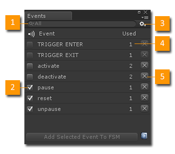
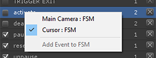

Open the Event Browser from the Playmaker Main Menu.
The Event Browser shows all the events used by open FSMs and Prefabs.

- Search: Filter the Event list to find events. Filter by All, Global, Local or System in the search popup menu.
- Global Flag: Mark an event as Global. Global Events can be sent between FSMs.
- Settings: See Settings Menu below.
- Used: Counts the number of FSMs that use the Event.
- Delete: Delete the Event.
Notes
- System Events (e.g., TRIGGER ENTER) cannot be deleted.
- Clicking a column title sorts the table by that column.
Context Menu

Right click an Event to open the Context Menu:
- Select FSMs that use the Event.
- Add the Event to the selected FSM.
Settings Menu
- Hide Unused Events: Hides Events not used in the loaded FSMs.
- Disable Window When Playing: Disable this tool window when playing the game in the editor.
See Also: